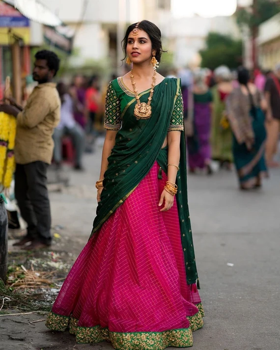

Langa Voni
Langa voni is a famous traditional long flowy skirt with a beautiful short blouse. It is exclusively made of silk or cotton material. It is also well known as the Lehenga saree, tucked in a lehenga style. It has charming embroideries and exclusive designs. Langa voni is available in any local city market in Telangana. The richness of Langa Voni has spread far and wide, and nowadays, even South actresses prefer wearing one.